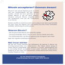

Beginnen met Bitcoin in Friesland: een praktische gids

Wil je beginnen met Bitcoin, maar weet je niet waar je moet starten? Je bent niet de enige. In deze gids lopen we stap voor stap door de basis, met praktische tips en links naar betrouwbare Nederlandse diensten. En het mooie is: in Friesland sta je er niet alleen voor. Er is een actieve community die je graag op weg helpt.
1. Wat heb je nodig? Een wallet
Een wallet is een app waarin je je bitcoin bewaart. Anders dan bij een bankrekening heb jij zelf de sleutels in handen. Voor wie net begint is een eenvoudige mobiele wallet ideaal. Populaire keuzes zijn BlueWallet en Phoenix voor op de telefoon. Wil je later grotere bedragen bewaren, dan zijn een desktopwallet zoals Sparrow of een hardware wallet verstandiger. Op onze links-pagina vind je een geselecteerde lijst met betrouwbare wallets.
2. Je eerste bitcoin kopen
In Nederland koop je eenvoudig en legaal bitcoin via een exchange of broker. Bekende Nederlandse opties zijn Bitvavo en Bitonic. Begin klein: koop een bedrag dat je kunt missen en waar je rustig van kunt leren. Zo went het proces zonder dat je risico van betekenis loopt. Meer uitleg over kopen en omzetten vind je op de pagina Bitcoin voor consumenten.
3. Veilig bewaren: jouw sleutels, jouw bitcoin
Zodra je wat bitcoin hebt, is bewaren het belangrijkst. Laat je wallet je een herstelzin van twaalf of vierentwintig woorden tonen, schrijf die op papier en bewaar hem op een veilige, droge plek. Deel die woorden nooit met iemand en typ ze nooit in op een website. Wie de herstelzin heeft, heeft de bitcoin. Maak je geen zorgen: voor kleine bedragen om mee te oefenen is een telefoonwallet prima.
4. Bitcoin uitgeven in Friesland
Bitcoin is niet alleen om te bewaren, je kunt er ook mee betalen. Steeds meer Friese ondernemers accepteren bitcoin, van de horeca tot kleine winkels. Op onze Bitcoin kaart zie je waar je terecht kunt. Een betaling met de Lightning-laag is in seconden gedaan en kost vrijwel niets.
5. Leer van de community
De snelste manier om te leren is samen met anderen. Bitcoin Friesland organiseert regelmatig meetups waar zowel beginners als ervaren gebruikers welkom zijn. Geen verkooppraatjes, gewoon mensen die graag kennis delen. Kom langs, stel je vragen en betaal gerust je eerste biertje met sats.
Veelgemaakte beginnersfouten
Houd het simpel en voorkom de bekende valkuilen: investeer nooit meer dan je kunt missen, bewaar je herstelzin offline en niet als foto in je telefoon, en wantrouw iedereen die je via een privébericht "hulp" of "gegarandeerde winst" belooft. Neem de tijd. Bitcoin loopt niet weg.
Klaar om te beginnen?
Zet vandaag de eerste stap: installeer een wallet, koop een klein bedrag en kom naar de volgende meetup. Vragen onderweg? Stel ze in onze Telegram-groep, daar helpt de community je graag verder.
Sluit je aan bij de Bitcoin Friesland community
Word lid van TelegramLet op: deze informatie is uitsluitend bedoeld voor educatieve doeleinden en vormt geen financieel advies. Bitcoin-koersen kunnen sterk schommelen.